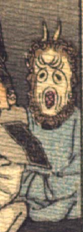

白い顔の鬼。巻き毛とあごひげが顔を取り巻くように生えている。頭の上に細い角が2本生えている。額に皺が寄り、目玉は黒い。鼻はなく、丸く開いた口は木の洞を思わせる。青い衣服を着て、両手を組んで袖の中に入れ、座っている。
著作者：J.Dautremer／出典：親書誌：U426_nichibunken_0123：Le vieillard et les démons／日付：2006／資源識別子：U426_nichibunken_0123_0003_0016
Copyright (c)2010- International Research Center for Japanese Studies, Kyoto, Japan. All rights reserved.